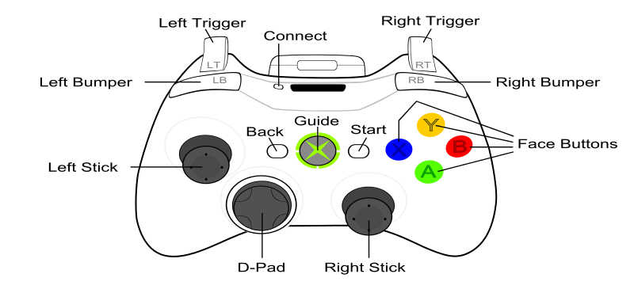

Joystick:getGamepadMapping
| Available since LÖVE 0.9.0 |
| This function is not supported in earlier versions. |
Gets the button, axis or hat that a virtual gamepad input is bound to.
Function
Synopsis
inputtype, inputindex, hatdirection = Joystick:getGamepadMapping( axis )
Arguments
-
GamepadAxis axis - The virtual gamepad axis to get the binding for.
Returns
-
JoystickInputType inputtype - The type of input the virtual gamepad axis is bound to.
-
number inputindex - The index of the Joystick's button, axis or hat that the virtual gamepad axis is bound to.
-
JoystickHat hatdirection (nil) - The direction of the hat, if the virtual gamepad axis is bound to a hat. nil otherwise.
Notes
Returns nil if the Joystick isn't recognized as a gamepad or the virtual gamepad axis is not bound to a Joystick input.
Function
Synopsis
inputtype, inputindex, hatdirection = Joystick:getGamepadMapping( button )
Arguments
-
GamepadButton button - The virtual gamepad button to get the binding for.
Returns
-
JoystickInputType inputtype - The type of input the virtual gamepad button is bound to.
-
number inputindex - The index of the Joystick's button, axis or hat that the virtual gamepad button is bound to.
-
JoystickHat hatdirection (nil) - The direction of the hat, if the virtual gamepad button is bound to a hat. nil otherwise.
Notes
Returns nil if the Joystick isn't recognized as a gamepad or the virtual gamepad button is not bound to a Joystick input.
Notes
The physical locations for the virtual gamepad axes and buttons correspond as closely as possible to the layout of a standard Xbox 360 controller.

See Also
Category: